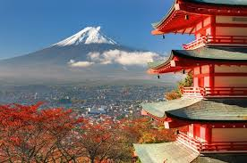
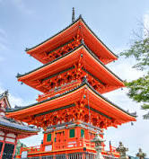
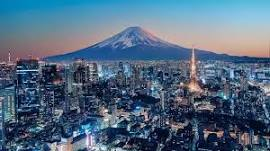

About Japan



Japan, known as the Land of the Rising Sun, is a fascinating blend of ancient traditions and cutting-edge modernity. It is renowned for its rich culture, technological innovations, exquisite cuisine, breathtaking natural landscapes, and much more.
Culture and Tradition
Japanese culture is deeply influenced by its long history and traditions. Traditional arts such as tea ceremonies, ikebana (flower arranging), calligraphy, and origami are still practiced alongside modern pursuits.
Technology and Innovation
Japan is a global leader in technology and innovation. It is home to renowned companies such as Sony, Toyota, Nintendo, and Panasonic. Japanese advancements in robotics, automotive manufacturing, electronics, and high-speed rail technology are widely recognized.
Quick Facts
- Capital: Tokyo
- Population: Approximately 126 million
- Official Language: Japanese
- Currency: Japanese Yen (JPY)
- National Flower: Cherry Blossom (Sakura)